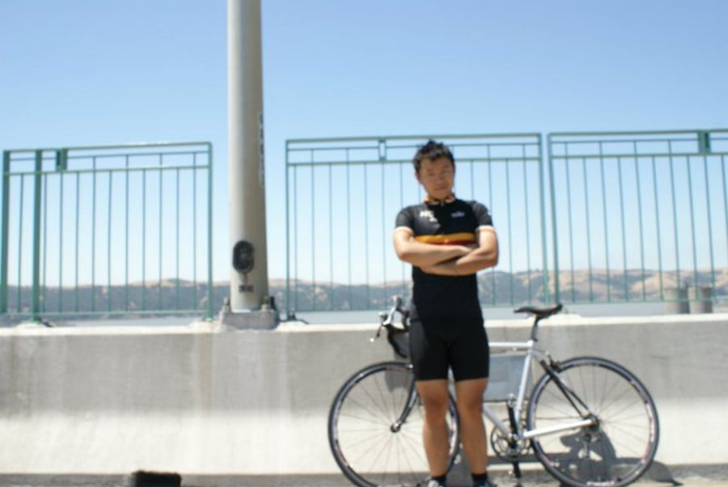
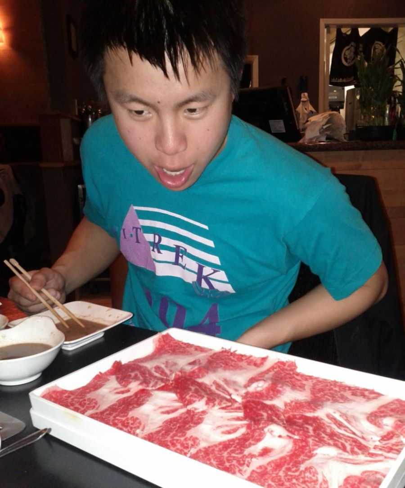

Hello
I am Eric. I do a lot of web development. In particular, I do a lot with Javascript and Node.js but I'll do Android, Erlang, C#, Spanish, whatever it takes to get the job done.
I have particular interest in web networking but I've worked with just about every cutting-edge web technology. Sometimes I like to pretend I'm a designer.
I am 21 years old.
Cool things I've been lucky to be a part of
I was a founder of Y Combinator company Flotype. We raised $1.4 million from awesome investors but ultimately failed.
I graduated from UC Berkeley in 2.5 years (and dropped out to found Flotype in the middle!).
I founded Hackers @ Berkeley, the largest computer science student organization on campus.
Fun facts and stuff
Behind every engineer is a fun human being!
I like to climb mountains. Both figuratively and literally. This is me on Mt. Shasta last year:
In my spare time, I really like to ride my bicyle. I like riding long distances. I'm not that fast but I wear the same spandex as people that are.

I also really enjoy cooking. I like to cook a variety of cuisines. Berkeley Bowl is my favorite grocery store. Here's some fried chicken I made for breakfast:
In general, I have a predatory relationship with food. This is my typical reaction to well-marbled beef:
